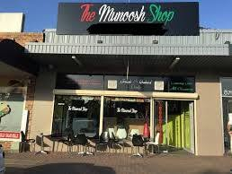

About The Munoosh Shop

The Munoosh Shop is a local Lebanese restaurant located in Macquarie Fields, New South Wales. We proudly serve fresh, authentic Lebanese meals including traditional manoosh, pizzas, burgers, wraps, snacks and drinks.
Our goal is to provide delicious food, excellent customer service and affordable prices for everyone in the local community. Whether you are dining with family or grabbing a quick takeaway meal, we aim to make every visit enjoyable.